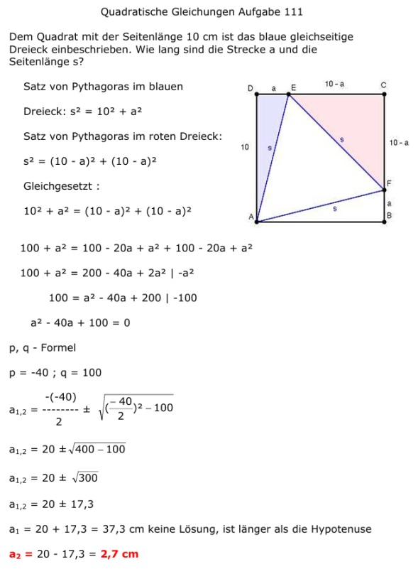

Aufgabe 111 Dem Quadrat mit der Seitenlänge 10 cm ist das blaue gleichseitige Dreieck einbeschrieben. Wie lang sind die Strecke a und die Seitenlänge s?  Satz von Pythagoras im blauen Dreieck: s2 = 102 + a2 Satz von Pythagoras im roten Dreieck: s2 = (10 - a)2 + (10 - a)2 Gleichgesetzt : 102 + a2 = (10 - a)2 + (10 - a)2 100 + a2 = 100 - 20a + a2 + 100 - 20a + a2 100 + a2 = 200 - 40a + 2a2 | -a2 100 = a2 - 40a + 200 | -100 a2 - 40a + 100 = 0 p, q - Formel p = -40 ; q = 100 a1,2 = 20 ± 17,3 a1 = 20 + 17,3 = 37,3 cm keine Lösung, ist länger als die Hypotenuse a2 = 20 - 17,3 = 2,7 cm s2 = 102 + 2,72 = 107,3 | √ s = 10,4 cm